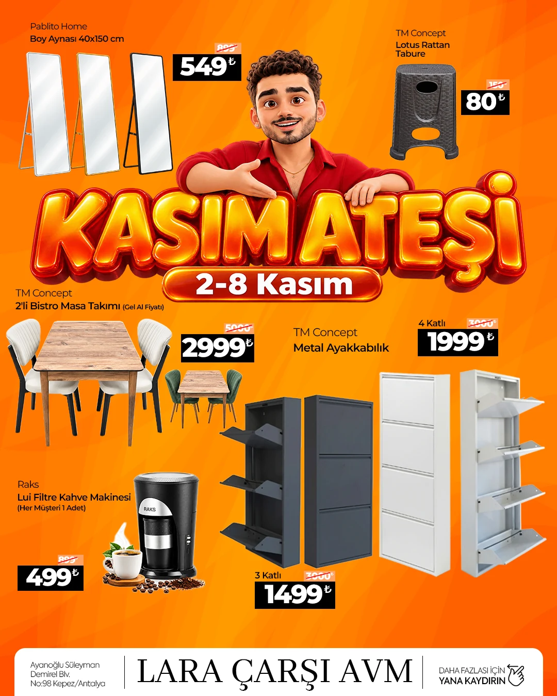
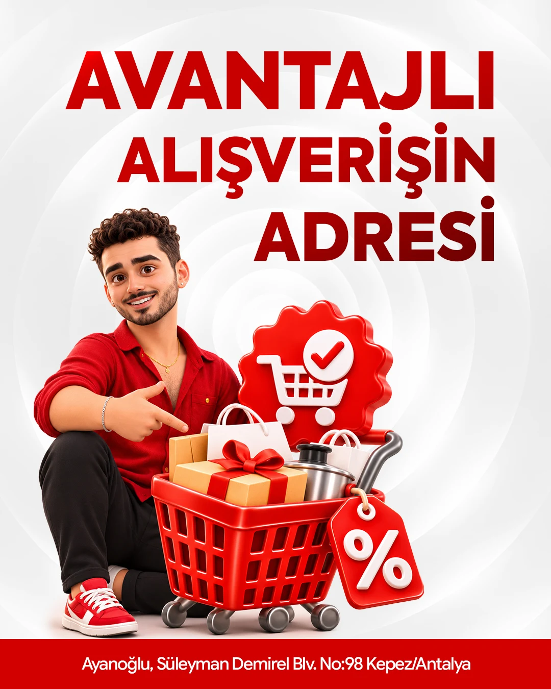

01 / AYNA
Evin yeni yansıması.
Ürün detayı → kullanım hissi → kampanya kapanışı.
Hedef: Kasım boyunca daha fazla satış.
Her hafta yeni tasarım, yeni alışveriş nedeni.

Kasım Ateşi’nin hedefi: mağaza trafiğini, sepet tutarını ve tekrar alışverişi büyütmek.
Kasım Ateşi çatısını bütün ay canlı tutuyoruz. Ürün fiyatları, kategori vitrinleri, hediye çekleri, ürün filmleri ve içerik üreticisi ziyaretleri için farklı tasarım serileri hazırlıyoruz. Satış sonuçlarına ve ürün stoklarına göre sonraki haftanın kreatiflerini yeniliyoruz.
Turuncu enerji, güçlü fiyatlar, tanınan karakter.
İlk kampanya, hediye çeki, katılım ve final için ayrı mesaj.
Ana tasarımdan son hikâye uyarlamasına kadar tutarlı üretim.
Ürünü öne çıkaran vitrinler.
Fırsatı hissettiren bir ritim.
Görseller mevcut çalışmalardır. Ürün fiyatları sunum referansıdır; yayın öncesi güncel stok ve fiyat onayı alınır. Görsele tıklayarak büyütün.

Her görselde tek ana vaat. Daha ferah fiyat alanları, tutarlı kampanya başlıkları ve platforma uygun kadrajlar. Markanın tanıdık enerjisini koruyan ölçülü bir yenileme.
Ürün detayı, kullanım hissi ve güçlü kapanış.
Her kampanya dönemine özel video versiyonları.
Ürün detayı → kullanım hissi → kampanya kapanışı.
Doku ve desen → yaşam alanı → mağazaya davet.
Form ve renk → tamamlayıcı ürün → fırsat mesajı.
Ana kampanya dili korunur. Ürün, format ve mesaj satış hedefine göre değişir.
Tek ürün, net fiyat, güçlü fırsat başlığı. Çok ürünlü katalog ve kategori seçkileriyle destek.
Evde kullanım, önce–sonra, yakın detay ve kısa ürün filmleri. Reels için farklı ilk 3 saniye kurguları.
Beş hediye çeki kademesi, ertesi gün kullanım anlatımı ve 29 Kasım son kullanım hatırlatması.
Influencer mağaza turu, ürün seçimi, Antalya MAG tanıtımı ve hikâyede ürün karşılaştırmaları.
29–30–31 Ekim’de Kasım Ateşi için 3–2–1 açılış geri sayımı. 11.11 ve Muhteşem Cuma için ayrı ana tasarımlar.
Başarı takibi: kampanya ürünlerinin satışı, ortalama sepet ve kullanılan hediye çeki. Kreatif karşılaştırmasında izlenme ve ürün ilgisi. İlk hafta verisi sonraki haftanın ürün ve içerik seçimine yön verir.
Dört dalga. Dört farklı motivasyon.
Birbirini büyüten bir kampanya akışı.
Yüzdeler önerilen medya bütçesi paylarıdır; toplam %100. Tutarlar, stoklar ve teklif koşulları birlikte netleştirilir. 27 Kasım 2026: Muhteşem Cuma.
Hediye çeki, sepet değeri ve zaman etkisini
aynı kampanya çatısında buluşturuyoruz.
2–8 Kasım alışverişinize hediye çeki. Sepet büyüdükçe bir sonraki ziyaretinizin avantajı da büyüsün.
2 Kasım’da 2.000 TL alışveriş yapın. 200 TL hediye çekinizi 3–29 Kasım arasında, bir sonraki alışverişinizde kullanın.
Önerilen kampanya koşulları: 2–8 Kasım 2026 tarihli tek fişin, indirimler sonrası tutarına göre yalnızca en yüksek kademe kazanılır. Çek alışverişin ertesi günü aktif olur; 29 Kasım 2026 günü sonuna kadar tek seferde kullanılır. Çekler birleştirilmez, nakde çevrilmez ve kullanıldığı alışverişte yeni çek kazandırmaz. Ürün kapsamı ve koşullar marka onayıyla kesinleşir.
Bir sonraki eşiği görünür kılan kademeli indirim iletişimi.
Seçili ürünlerde “2. ürüne indirim” veya “2 al 1 öde”. Çok satan ürünü uygun tamamlayıcıyla eşleştirerek stok hareketini destekleyelim.
Ürün eşleşmeleri ve oran, ürün bazında marj kontrolüyle belirlenir.
“Şanslı Saatler” için örnek zaman aralığı. O saate özel kupon veya sonraki alışverişte kullanılacak hediye çeki. Sabah duyuru, başlangıç hatırlatması, son çağrı.
Hikâyede iki ürün yarışsın. Kazanan ürüne 24 saatlik ekstra fırsat tanımlayalım.
Birini seçin; sunumdaki örnek etkileşimi deneyin.
Tüm mekanikler öneridir. Kampanyalar otomatik olarak birleştirilmez; geçerlilik, seçili ürünler, kupon kullanımı ve indirim kapsamı yayın öncesinde onaylanır.
3–2–1 serisi 29 Ekim’de başlıyor.
29 Ekim: son 3 gün / 30 Ekim: son 2 gün / 31 Ekim: son gün.
Mağazayı ziyaret eden, ürünü deneyen ve alışveriş nedenini kendi diliyle anlatan içerik üreticileri.
Kaynak: Salus Influencer Portföyü, Instagram profilleri, 15 Ekim 2026. Toplam takipçi sayısı tekil erişim değildir; kitleler örtüşebilir. İş birlikleri, bütçe ve müsaitlik onayından sonra kesinleşir.
İlk kampanyada mağaza turu ve ürün seçimi. Ara dönemde hediye çekinin nasıl kullanıldığını anlatan hikâyeler. Her üretici için ayrı kampanya koduyla ölçülebilen mağaza ilgisi ve çek kullanımı.
Hesaplar portföyden seçilen adaylardır.
Kesinleşmiş kampanya kadrosu değildir.
Profil bilgileri paylaşılan portföydeki tarihli kayıtlardır. Güncel rakamlar ve kitle uyumu kampanya seçimi sırasında yeniden kontrol edilir.
Kasım kreatif yönetimine ek olarak Antalya MAG’da haber, tanıtım ve röportaj içeriği.
Mağaza turu, öne çıkan fırsatlar ve hediye çeki avantajını anlatan bir tanıtım Reels’i. Hikâyelerle mağaza konumu ve kampanya tarihlerini hatırlatan yayın desteği.
Önerilen set: 1 tanıtım Reels’i, 3 hikâye, çekim ve yayın koordinasyonu, yayın sonrası izlenme ve etkileşim raporu.
Kasım tasarım yönetiminden ve influencer iş birliklerinden ayrı tekliflendirilir. Yayın tarihi ve içerik kapsamı birlikte onaylanır.
Kaynak: paylaşılan Antalya MAG içerik örnekleri, @antalya.mag Instagram, 13 Ekim 2026. Rakamlar geçmiş içeriklerin izlenmeleridir. Lara Çarşı için izlenme veya satış garantisi değildir.
Haftalık ürün listesi, kampanya mesajı ve görsel yön. Ana tasarım onayıyla üretimi başlatıyoruz.
Feed, hikâye, Reels kapakları, kısa video kapanışları ve geri sayım serileri.
Fiyat, tarih, stok ve metin kontrolü. Tek dosya akışında revizeler ve platforma hazır teslim.
Erişim, video izlenmesi, ürün ilgisi ve ölçülebilen kupon kullanımları üzerinden sonraki haftayı iyileştirme.
4 dönem ana tasarımı + haftalık ürün vitrinleri + 3 ürün videosu uyarlaması + hikâye ve anket şablonları + ilk kampanya için 3–2–1 serisi
Görünür bir marka. Tutarlı bir tasarım.
Her hafta mağazaya gelmek için yeni bir neden.